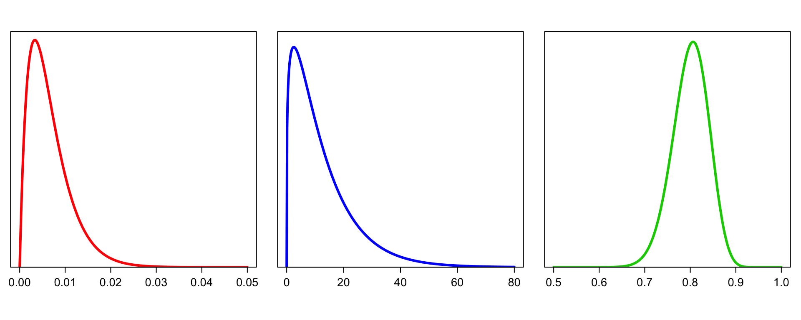

Last updated: 2022-01-30
Checks: 7 0
Knit directory: beer_manuscript/
This reproducible R Markdown analysis was created with workflowr (version 1.7.0). The Checks tab describes the reproducibility checks that were applied when the results were created. The Past versions tab lists the development history.
Great! Since the R Markdown file has been committed to the Git repository, you know the exact version of the code that produced these results.
Great job! The global environment was empty. Objects defined in the global environment can affect the analysis in your R Markdown file in unknown ways. For reproduciblity it’s best to always run the code in an empty environment.
The command set.seed(20210907) was run prior to running the code in the R Markdown file. Setting a seed ensures that any results that rely on randomness, e.g. subsampling or permutations, are reproducible.
Great job! Recording the operating system, R version, and package versions is critical for reproducibility.
Nice! There were no cached chunks for this analysis, so you can be confident that you successfully produced the results during this run.
Great job! Using relative paths to the files within your workflowr project makes it easier to run your code on other machines.
Great! You are using Git for version control. Tracking code development and connecting the code version to the results is critical for reproducibility.
The results in this page were generated with repository version c46876e. See the Past versions tab to see a history of the changes made to the R Markdown and HTML files.
Note that you need to be careful to ensure that all relevant files for the analysis have been committed to Git prior to generating the results (you can use wflow_publish or wflow_git_commit). workflowr only checks the R Markdown file, but you know if there are other scripts or data files that it depends on. Below is the status of the Git repository when the results were generated:
Ignored files:
Ignored: .DS_Store
Ignored: .Rhistory
Ignored: .Rproj.user/
Ignored: analysis/.DS_Store
Ignored: analysis/partials/.DS_Store
Ignored: data_processed/.DS_Store
Ignored: data_processed/simulation_2beads_mle/.DS_Store
Ignored: data_processed/simulation_2beads_mom/.DS_Store
Ignored: data_processed/simulation_2beads_truth/.DS_Store
Ignored: data_processed/simulation_4beads_edgeR/.DS_Store
Ignored: data_processed/simulation_curves.rda
Ignored: data_raw/.DS_Store
Ignored: figures/.DS_Store
Untracked files:
Untracked: R/figure_postpred.R
Untracked: R/run_hiv_custom.R
Untracked: data_processed/hiv_samples.rds
Untracked: figures/postpred.png
Unstaged changes:
Modified: R/figure_attnconstant.R
Modified: R/figure_corstructure.R
Modified: R/figure_simulation_postprob.R
Modified: README.Rmd
Note that any generated files, e.g. HTML, png, CSS, etc., are not included in this status report because it is ok for generated content to have uncommitted changes.
These are the previous versions of the repository in which changes were made to the R Markdown (analysis/beer.Rmd) and HTML (docs/beer.html) files. If you’ve configured a remote Git repository (see ?wflow_git_remote), click on the hyperlinks in the table below to view the files as they were in that past version.
| File | Version | Author | Date | Message |
|---|---|---|---|---|
| Rmd | c46876e | Athena Chen | 2022-01-30 | added Figure S13, moved figure |
| html | bbf7cba | Athena Chen | 2022-01-23 | rebuilt webpage |
| html | dc7a3fd | Athena Chen | 2022-01-23 | Build site. |
| Rmd | 01612f1 | Athena Chen | 2022-01-23 | updated model |
| html | 3b06e48 | Athena Chen | 2022-01-23 | Build site. |
| html | d8b023f | Athena Chen | 2022-01-18 | Build site. |
| html | 75f2a6d | Athena Chen | 2022-01-18 | Build site. |
| Rmd | 9d7b43a | Athena Chen | 2022-01-18 | Updated repo to use most up-to-date figures and code |
| html | 9245fe2 | Athena Chen | 2021-09-15 | Build site. |
| html | 54af830 | Athena Chen | 2021-09-15 | Build site. |
| html | e30784b | Athena Chen | 2021-09-14 | Build site. |
| html | 4984369 | Athena Chen | 2021-09-14 | Build site. |
| html | 34893c7 | Athena Chen | 2021-09-14 | Build site. |
| Rmd | 667d1af | Athena Chen | 2021-09-14 | Added simulation output |
| html | 667d1af | Athena Chen | 2021-09-14 | Added simulation output |
BEER is a Bayesian hierarchical model for identifying enriched antibody responses from phage-immunoprecipitation sequencing (PhIP-Seq) data. Here, we introduce the notation and describe the BEER model and implementation in the R package beer.
Let \(i = 1, 2, \ldots, P\) and \(j = 1, 2, \ldots, 96\) index the peptides and samples, respectively. Without loss of generality, assume samples \(\{1, 2, \ldots, N\}\) are mock IP (beads-only) samples. We observe,
\[\begin{align*} Y_{ij} &= \text{ observed # reads mapped to peptide } i \text{ in sample } j\\ n_j &= \sum_{i=1}^P Y_{ij} \text{ total # of reads in sample }j \end{align*}\]
Define,
\[\begin{align*} \theta_{ij} &= \text{ probability that peptide } i \text{ in sample } j \text{ pulls a read }\\ Z_{ij} &= \unicode{x1D7D9}(\text{peptide } i \text{ in sample } j \text { is enriched})\\ \pi_{j} &= \text{ proportion of enriched peptides in sample } j\\ c_j &= \text{ attenuation constant for sample } j\\ \phi_{ij} &= \text{ true fold change of peptide } i \text{ in sample } j \end{align*}\]
Prior parameters for \(\theta_{ij}, \pi_j, c_j\), and \(\phi_{ij}\) are denoted by,
\[\begin{align*} a_{ij}, b_{ij} &= \text{ shape parameters for the prior distribution of } \theta_{ij} \text{ for peptide } i \text{ in sample } j\\ a_{\pi}, b_{\pi} &= \text{ shape parameters for the prior distribution of } \pi_{j}\\ a_c, b_c &= \text{ shape parameters for the prior distribution of } c_{j}\\ a_\phi, b_\phi &= \text{ shape parameters for the prior distribution of } \phi_{ij}|Z_{ij} = 1 \end{align*}\]
Parameters specific to beads-only samples are denoted with the subscript \(i0\) (e.g. \(a_{i0}, b_{i0}, \theta_{i0}\), etc.). Additionally, let \(\phi_{min}\) denote the minimum fold-change for an enriched peptide.
For convenience, we also define two function \(f_a, f_b\) for deriving Beta parameters \(a, b\) given mean \(\mu\) and variance \(\sigma^2\):
\[\begin{align*} f_a(\mu, \sigma^2) &= \frac{\mu^2(1-\mu)}{\sigma^2} - \mu\\ f_b(\mu, \sigma^2) &= f_a(\mu, \sigma^2) \left(\frac{1}{\mu} - 1\right) \end{align*}\]
Let \(\mu_{i0}\) and \(\sigma^2_{i0}\) denote the mean and variance for peptide \(i\) in a beads-only sample where,
\[\begin{align*} \mu_{ij} &= \frac{a_{i0}}{a_{i0} + b_{i0}}\\ \sigma^2_{i0} &= \frac{a_{i0}b_{i0}}{(a_{i0} + b_{i0})^2 (a_{i0} + b_{i0} + 1)}. \end{align*}\]
To infer reactivity, we compare one sample to all beads-only samples on the same plate. Our hierarchical model given a sample \(j \in \{N+1, \ldots, 96\}\) is described as follows.
\[\begin{align*} Y_{ij}|\theta_{ij} &\sim \text{Binomial}(n_j, \theta_{ij}) \\ \theta_{ij}|a_{i0}, b_{i0}, c_j, \phi_{ij} &\sim \text{Beta}(f_a(c_j \phi_{ij} \mu_{i0}, \sigma^2_{i0}), f_b(c_j \phi_{ij} \mu_{i0}, \sigma^2_{i0})) \\ % c_j|B_j & \sim B_j\cdot 1 + (1 - B_j) \cdot \text{Beta}(a_c, b_c) \\ c_j & \sim \text{Beta}(a_c, b_c) \\ \phi_{ij}|Z_{ij} & \sim (1 - Z_{ij}) \cdot 1 + Z_{ij}(\phi_{min} + \text{Gamma}(a_\phi, b_\phi)) \\ Z_{ij}|\pi_j & \sim \text{Bernoulli}(\pi_j)\\ \pi_j &\sim \text{Beta}(a_\pi, b_\pi) \end{align*}\]
Left: the prior distribution for the proportion of reactive peptides in sample \(j\), \(\pi_j\), modeled as a Beta distribution Beta(\(a_\pi\) = 2, \(b_\pi\) = 300), reflecting peptide enrichment seen in previous studies. Middle: a Gamma(\(a_\phi\) = 1.25, \(b_\phi\) = 0.1) distribution, used in the prior distribution for the fold change \(\phi_{ij}\) for peptide \(i\) in sample \(j\), if reactive. Right: the prior distribution for the scaling constant in sample \(j\), \(c_j\), modeled as a Beta distribution Beta(\(a_c = 80\), \(b_c = 20\)).
par(mfrow = c(1,3),las=1,yaxs="i",mar=c(5,1,3,1),cex.axis=1.3)
curve(dbeta(x,2,300),from=0,to=0.05,n=501,
xlab="",ylab="",yaxt="n",ylim=c(0,115),lwd=3,col="red")
curve(dgamma(x,1.25,0.1),from=0,to=80,n=501,
xlab="",ylab="",yaxt="n",ylim=c(0,0.065),lwd=3,col="blue")
curve(dbeta(x,80,20),from=0.5,to=1,n=501,
xlab="",ylab="",yaxt="n",ylim=c(0,10.5),lwd=3,col="green3")
| Version | Author | Date |
|---|---|---|
| 75f2a6d | Athena Chen | 2022-01-18 |
To reduce computational time, BEER runs each sample individually in comparison to all beads-only samples and removes clearly enriched peptides apriori. The implementation can be broken down into the following steps:
For more information, please see the Supplemental Methods section of the manuscript.
sessionInfo()R version 4.1.2 (2021-11-01)
Platform: x86_64-apple-darwin17.0 (64-bit)
Running under: macOS Big Sur 10.16
Matrix products: default
BLAS: /Library/Frameworks/R.framework/Versions/4.1/Resources/lib/libRblas.0.dylib
LAPACK: /Library/Frameworks/R.framework/Versions/4.1/Resources/lib/libRlapack.dylib
locale:
[1] en_US.UTF-8/en_US.UTF-8/en_US.UTF-8/C/en_US.UTF-8/en_US.UTF-8
attached base packages:
[1] stats graphics grDevices utils datasets methods base
other attached packages:
[1] workflowr_1.7.0
loaded via a namespace (and not attached):
[1] Rcpp_1.0.8 compiler_4.1.2 pillar_1.6.4 later_1.3.0
[5] git2r_0.29.0 jquerylib_0.1.4 highr_0.9 tools_4.1.2
[9] getPass_0.2-2 digest_0.6.29 evaluate_0.14 tibble_3.1.6
[13] lifecycle_1.0.1 pkgconfig_2.0.3 rlang_0.4.12 rstudioapi_0.13
[17] yaml_2.2.1 xfun_0.29 fastmap_1.1.0 httr_1.4.2
[21] stringr_1.4.0 knitr_1.37 fs_1.5.2 vctrs_0.3.8
[25] rprojroot_2.0.2 glue_1.6.0 R6_2.5.1 processx_3.5.2
[29] fansi_1.0.2 rmarkdown_2.11 callr_3.7.0 magrittr_2.0.1
[33] whisker_0.4 ps_1.6.0 promises_1.2.0.1 htmltools_0.5.2
[37] ellipsis_0.3.2 httpuv_1.6.5 utf8_1.2.2 stringi_1.7.6
[41] crayon_1.4.2